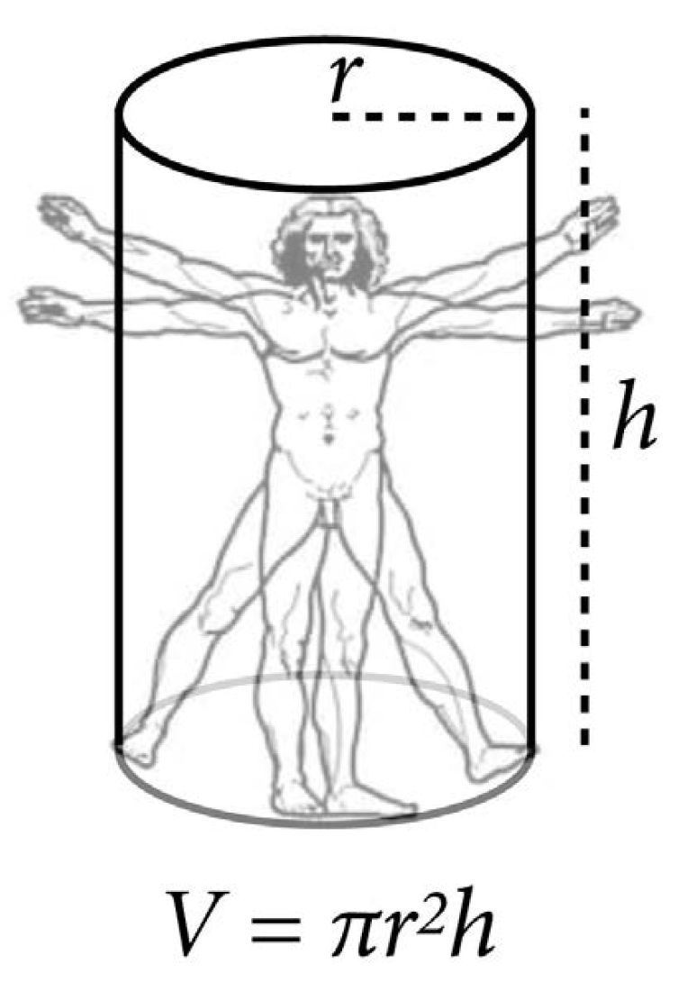
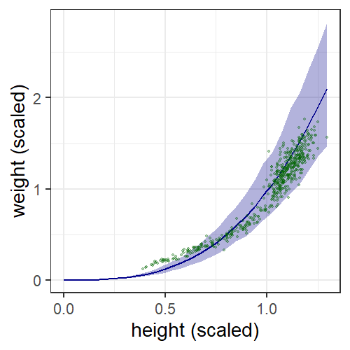

quap and ulam automatically take a
linear model specification (alist) and turn it into R or
Stan code
Height and Weight data set (from Chapter 4)
Model people as cylinders \[ \begin{align} V &= \pi r^2 h \\ r &= p h \\ V &= \pi (ph)^2 h = \pi p^2 h^3 \\ W &= k V = k \pi p^2 h^3 \end{align} \]
This is clearly not a linear model
\[ \begin{align} W &\sim \text{Log-Normal}(\mu, \sigma) \\ \exp(\mu) &= \pi k p^2 h^3 \\ k &\sim \textit{some prior} \\ p &\sim \textit{some prior} \\ \sigma &\sim \text{Exponential}(1) \\ \end{align} \]
mdl <- ulam(
alist(
w ~ dlnorm(mu, sigma),
exp(mu) <- 3.14159265 * k * p^2 * h^3,
p ~ dbeta(2, 18),
k ~ dexp(0.5),
sigma ~ dexp(1)
), data = d, chains = 4, cores = 4
)## mean sd 5.5% 94.5% n_eff Rhat4
## p 0.25 0.06 0.17 0.35 499 1.01
## k 5.81 2.70 2.47 10.92 570 1.00
## sigma 0.21 0.01 0.20 0.22 770 1.01
new_data <- tibble(h = seq(0, max(d$h), length.out = 30))
w_sim <- predicted_draws(mdl, new_data, value = "w_pred") %>%
group_by(.row) %>%
summarize(h = head(h, 1), w = mean(w_pred),
PI = list(set_names(PI(w_pred), c("min", "max")))) %>%
unnest_wider(PI)
ggplot(w_sim, aes(x = h, y = w)) +
geom_line(size = 1, color = "darkblue") +
geom_ribbon(aes(ymin = min, ymax = max), fill = "darkblue",
alpha = 0.3) +
geom_point(data = d, size = 1, alpha = 0.3, color = "darkgreen") +
labs(x = "height (scaled)", y = "weight (scaled)")## 'data.frame': 629 obs. of 5 variables:
## mean sd 5.5% 94.5% histogram
## y 2.12 0.73 1 3 ▃▁▁▁▇▁▁▁▁▅
## gender 1.51 0.50 1 2 ▇▁▁▁▁▁▁▁▁▇
## age 8.03 2.50 5 13 ▇▃▅▃▃▃▂▂▂▁
## majority_first 0.48 0.50 0 1 ▇▁▁▁▁▁▁▁▁▇
## culture 3.75 1.96 1 8 ▃▂▁▇▁▂▁▂▁▂▁▁▁▁y: Which color did they choose?
majority_first: Was the majority color chosen before
the minority color?##
## 1 2 3
## 0.2114467 0.4562798 0.3322734N <- 30
set.seed(163)
y1 <- sample(1:3, size = N/2, replace = TRUE)
y2 <- rep(2, N/2)
y <- sample(c(y1, y2))
table(y) / N## y
## 1 2 3
## 0.1666667 0.6666667 0.1666667\[ \begin{align} y &\sim \text{Categorical}(\theta) \\ \theta_j &= \sum{s = 1}^5 p_s \text{Pr}(j | s)\quad\text{for}~j = 1\ldots 3 \\ p &\sim \text{Dirichlet}([4,4,4,4,4]) \end{align} \]
ulam or quap
##
## data{
## int N;
## int y[N];
## int majority_first[N];
## }
## parameters{
## simplex[5] p;
## }
## model{
## vector[5] phi;
##
## // prior
## p ~ dirichlet( rep_vector(4,5) );
##
## // probability of data
## for ( i in 1:N ) {
## if ( y[i]==2 ) phi[1]=1; else phi[1]=0; // majority
## if ( y[i]==3 ) phi[2]=1; else phi[2]=0; // minority
## if ( y[i]==1 ) phi[3]=1; else phi[3]=0; // maverick
## phi[4]=1.0/3.0; // random
## if ( majority_first[i]==1 ) // follow first
## if ( y[i]==2 ) phi[5]=1; else phi[5]=0;
## else
## if ( y[i]==3 ) phi[5]=1; else phi[5]=0;
##
## // compute log( p_s * Pr(y_i|s )
## for ( j in 1:5 ) phi[j] = log(p[j]) + log(phi[j]);
## // compute average log-probability of y_i
## target += log_sum_exp( phi );
## }
## }## Inference for Stan model: rt_cmdstanr_82e68937d1e417e265d6739ef917f4e6-202211290539-1-4b9fa0.
## 4 chains, each with iter=1000; warmup=500; thin=1;
## post-warmup draws per chain=500, total post-warmup draws=2000.
##
## mean se_mean sd 2.5% 25% 50% 75% 97.5% n_eff Rhat
## p[1] 0.26 0.00 0.04 0.18 0.23 0.26 0.28 0.33 555 1.01
## p[2] 0.14 0.00 0.03 0.07 0.12 0.14 0.16 0.20 543 1.00
## p[3] 0.15 0.00 0.03 0.08 0.13 0.15 0.17 0.20 562 1.00
## p[4] 0.20 0.00 0.08 0.06 0.14 0.19 0.25 0.36 433 1.00
## p[5] 0.26 0.00 0.03 0.19 0.24 0.26 0.28 0.32 1554 1.00
## lp__ -667.21 0.06 1.54 -671.17 -667.98 -666.85 -666.06 -665.34 602 1.00
##
## Samples were drawn using NUTS(diag_e) at Tue Nov 29 5:39:48 AM 2022.
## For each parameter, n_eff is a crude measure of effective sample size,
## and Rhat is the potential scale reduction factor on split chains (at
## convergence, Rhat=1).